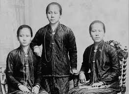
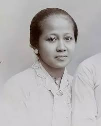
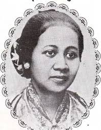
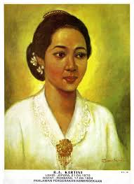
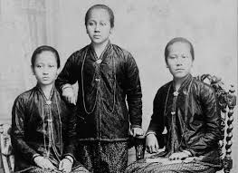
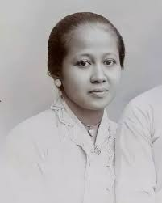
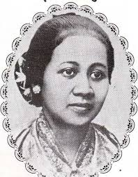
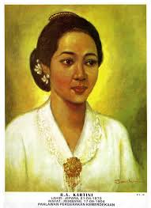

Raden Ajeng Kartini
R.A. Kartiniadalah seorang wanita asal Jepara yang lahir pada 21 April 1879. Ia berasal dari keluarga bangsawan, yang menjelaskan gelar Raden Adjeng yang disematkan padanya. Kartini adalah putri dari Raden Mas Adipati Ario Sosoningrat dan M.A. Ngasirah, di mana ayahnya menjabat sebagai bupati Jepara pada waktu itu. Sebagai anak kelima dari sebelas bersaudara, Kartini memiliki kesempatan yang berbeda dibandingkan dengan banyak anak pribumi lainnya. Ia dapat bersekolah di Europeesche Lagere School (ELS), sebuah lembaga pendidikan yang diperuntukkan bagi orang Belanda dan orang Jawa yang kaya. Di ELS, Kartini mempelajari bahasa Belanda. Sayangnya, ia hanya dapat menyelesaikan pendidikan hingga usia 12 tahun karena sudah memasuki masa pingitan, sebuah tradisi di mana perempuan Jawa diharuskan untuk tinggal di rumah.
Prestasi
Raden Ajeng Kartini dikenal sebagai pelopor pendidikan dan emansipasi perempuan di Indonesia, dengan sejumlah prestasi yang signifikan. Ia mendorong akses pendidikan bagi perempuan, menulis surat-surat yang mengungkapkan pemikiran kritis tentang hak-hak perempuan, yang kemudian dikumpulkan dalam buku "Habis Gelap Terbitlah Terang." Kartini menjadi simbol emansipasi, dengan pengaruhnya yang luas di kalangan perempuan dan masyarakat, serta diperingati setiap tahun pada 21 April sebagai Hari Kartini, menghormati perjuangannya dalam memperjuangkan kesetaraan gender dan hak-hak perempuan.
Pekerjaan / Profesi
Raden Ajeng Kartini tidak memiliki profesi formal seperti yang kita kenal saat ini, tetapi ia berperan sebagai seorang aktivis, penulis, dan pemikir. Meskipun pada masa hidupnya, perempuan tidak diizinkan untuk bekerja di luar rumah, Kartini menggunakan bakat menulisnya untuk menyuarakan pemikiran dan perjuangannya. Ia juga berupaya untuk mendirikan sekolah bagi perempuan, menciptakan ruang bagi pendidikan dan pengembangan diri. Dengan demikian, meskipun tidak memiliki pekerjaan formal, pengaruhnya sebagai tokoh sosial dan advokat pendidikan perempuan sangat signifikan.
Galeri Foto
.jpeg)
 







Referensi
- https://www.brainacademy.id/blog/biografi-ra-kartini
- https://uinsgd.ac.id/yuk-teladani-5-sifat-kartini-yang-menginspirasi-mahasiswa-harus-tahu/#:~:text=Salah%20satu%20prestasi%20RA%20Kartini,cita%2C%20harapan%20bersama%20para%20anggota.